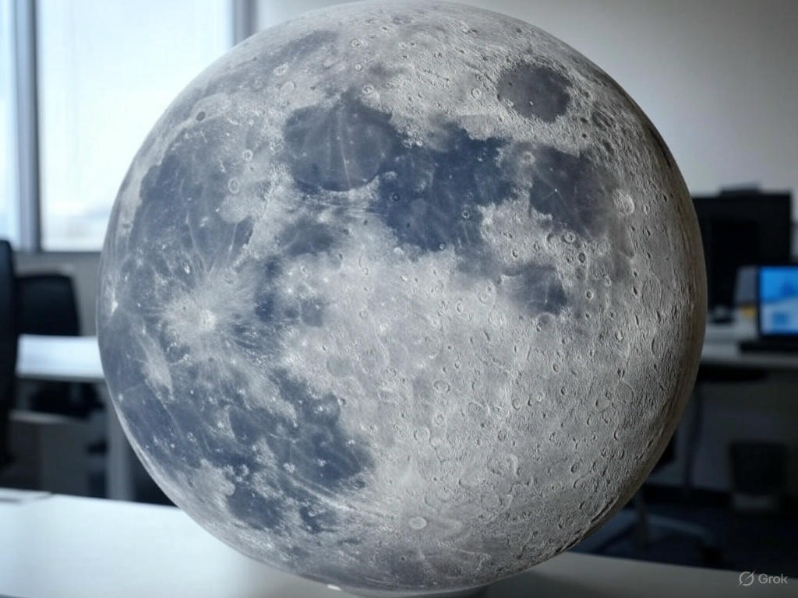
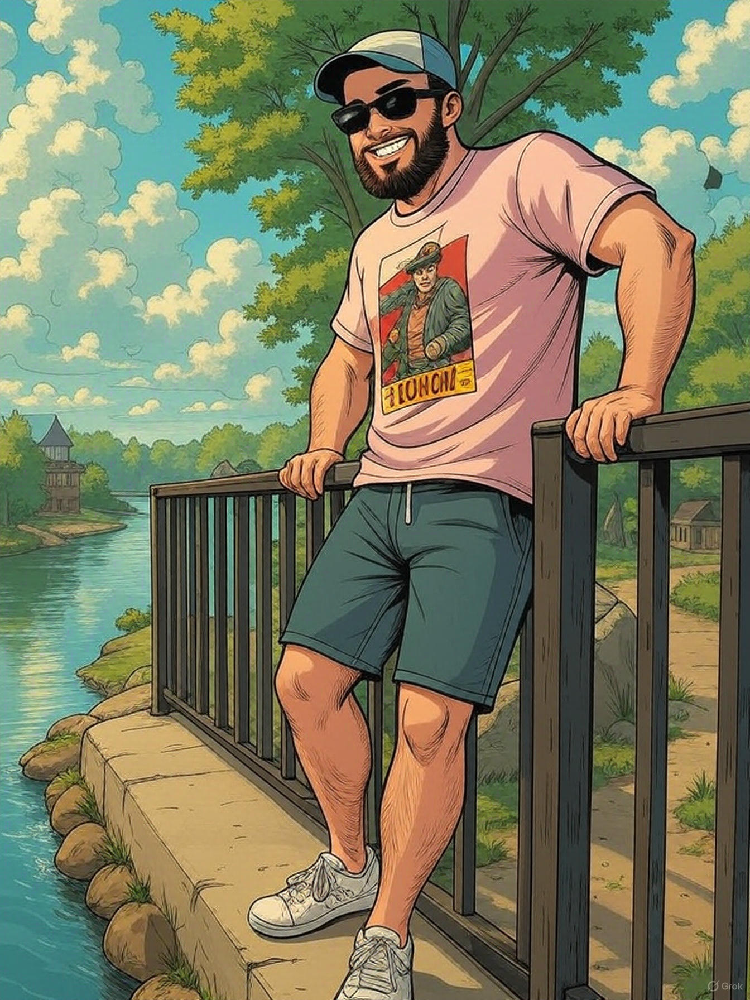
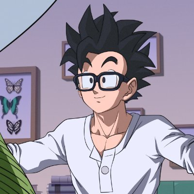

Meet Our Team

Scrum Master & Software Engineer
Chase brings two years of Software Engineering experience from Murata Machinery, with expertise in software development, project leadership, and Agile practices like stand-ups and sprint planning. He is currently pursuing a Master's in Computer Science at UNC Charlotte. While he can focus heavily on details, this reflects his dedication to quality.
Moodboard: Inspired by Agile methodologies for efficient teamwork, and tools like GitHub for seamless version control. I admire the work of Kent Beck, a pioneer in Agile and Extreme Programming.


Developer
Cole is a new developer with a passion to learn.

Developer
Sajal is Frontend Developer who is proficient in HTML, CSS, and JavaScript. Currently pursuing a Bachelor’s in Computer Science with a concentration in Software Engineering at UNC Charlotte.
Mood board: I love to express my creativity and problem-solving skills. This has led to my interest in frontend development, as well as working my way into backend development. As I kept coding, I wanted to keep learning more and more!

Frontend Developer
John is a skilled frontend developer with 5 years of experience in creating responsive web applications.
Developer
Atiana is a double major in Finance and Management Information Systems as well as a double minor in Software Development and Operations & Supply Chain Management. Currently working as a Mobile Application Developer for an anatomical company, she is also the Product Developer for DuckDash! With her experience, you can be assured all needs will be met